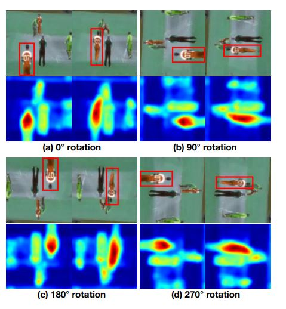

<!DOCTYPE HTML>

<html>

<head>
  <title> RotNet </title>

  <link rel="stylesheet" href="test.css">
</head>


<body>
  <br>

  <center><span style="font-size: 44px; font-weight: bold;"> RotNet : Rotation Net</span></center><br/>
<br>
<div style="width: 750px; margin: 0 auto; text-align=center; text-align: justify; text-justify: inter-ideograph;">
  This applies geometrical transformation on the clips. The videos are rotated by various angles and the network predicts the class which it belongs to.
Since the clips are rotated, it helps the network to not converge to a trivial solution

<br>
<br>
More details can be found  <a href="https://arxiv.org/abs/1811.11387"> here. </a>
<center>
  <br>
  Video frames and their corresponding attention maps
generated self-supervised 3DRotNet at each rotation. Note that both spatial (e.g. locations and shapes of different
persons) and temporal features (e.g. motions and location changes
of persons) are effectively captured. The hottest areas in attention
maps indicate the person with the most significant motion (corresponding to the red bounding boxes in images). The attention
map is computed by averaging the activations in each pixel which
reflects the importance of that pixel.

  </center>
  <br>
  <br>
</div>
</body>
</html>
